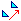
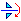
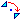
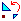

Les transformations géométriques
Las transformaciones geométricas.
La herramienta traslación: 
Esta herramienta permite obtener la imagen de un objeto por una traslación.
Para eso:
- Cliquear sobre el origen del vector de la traslación.
- Cliquear sobre su extremidad.
- El vector se pone a parpadear. Mientras parpadea pueden cliquear sobre un objeto para obtener su imagen.
Es así posible obtener la imagen de una recta, un segmento, una semirrecta, una circunferencia, un arco de circunferencia, un polígono o una poligonal..
La herramienta simetría axial: 
Esta herramienta permite obtener la imagen de un objeto por una simetría axial.
Para eso:
- Cliquear sobre el eje de simetría (recta, segmento, semirrecta o vector).
- El eje de simetría se pone a parpadear. En tanto que parpadea ustedes pueden cliquear sobre un objeto para obtener su imagen.
La herramienta simetría central: 
Esta herramienta permite obtener la imagen de un objeto por una simetría central.
Para eso:
- Cliquear sobre el centro de simetría.
- El centro de simetría se pone a parpadear. En tanto que parpadea ustedes pueden cliquear sobre un objeto para obtener su imagen.
La herramienta rotación: 
Esta herramienta permite obtener la imagen de un objeto por una rotación.
Para eso:
- Cliquear sobre el centro de la rotación.
- Una caja de diálogo se abre para pedirles el ángulo de la rotación. Atención que debe tenerse en cuenta la unidad de ángulo de la figura.
- El centro de la rotación se pone a parpadear. En tanto que parpadea ustedes pueden cliquear sobre un objeto para obtener su imagen.
La herramienta homotecia:
Esta herramienta permite obtener la imagen de un objeto por una homotecia.
Para eso:
- Cliquear sobre el centro de la homotecia.
- Una caja de diálogo se abre para pedirles la razón de la homotecia. Atención que debe tenerse en cuenta la unidad de ángulo de la figura.
- El centro de la homotecia se pone a parpadear. En tanto que parpadea ustedes pueden cliquear sobre un objeto para obtener su imagen.
La herramienta semejanza directa: 
Esta herramienta permite obtener la imagen de un objeto por una semejanza directa.
Para eso:
- Cliquear sobre el centro de la semejanza.
- Una caja de diálogo se abre para pedirles la razón y el ángulo de la semejanza. Atención que debe tenerse en cuenta la unidad de ángulo de la figura.
- El centro de la semejanza se pone a parpadear. En tanto que parpadea ustedes pueden cliquear sobre un objeto para obtener su imagen
La herramienta inversión:
Se obtiene por el menú Crear - Imagen por transformación - Inversión.
Esta herramienta permite obtener la imagen de un punto por una inversión.
Para eso:
- Cliquear sobre el centro de la inversión.
- Una caja de diálogo se abre para pedirles razón de la inversión. Atención que debe tenerse en cuenta la unidad de ángulo de la figura.
- El centro de la inversión se pone a parpadear. En tanto que parpadea ustedes pueden cliquear sobre un punto para obtener su imagen.
Copyright © <2009>, <Yves Biton>
Created with the Freeware Edition of HelpNDoc: Free Web Help generator